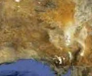

This neat example shows how a transition can be used with a set of image slices, to create the effect of panning around a single, large image.

The demo scripting could be extended as far as it needs to go, with any number of slices making-up the larger image. You'd probably also want to make the interface a little friendlier, such as telling users when they've reached the edge of the map!
⇥ Powered by Image Transitions 2.0